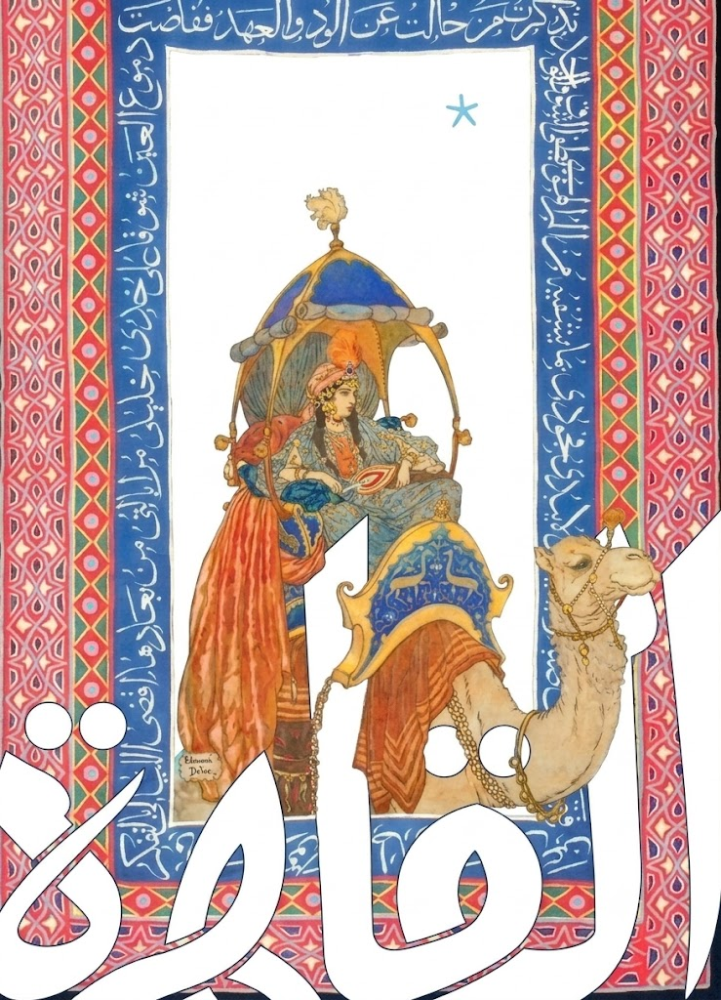
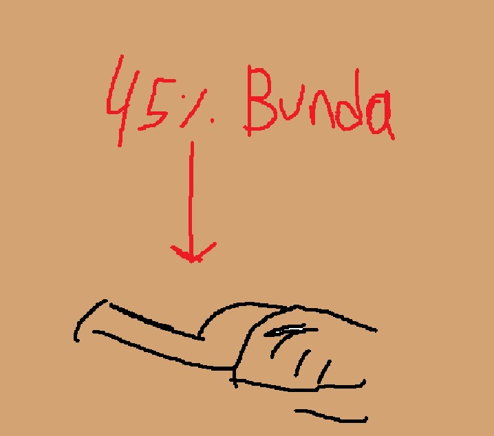
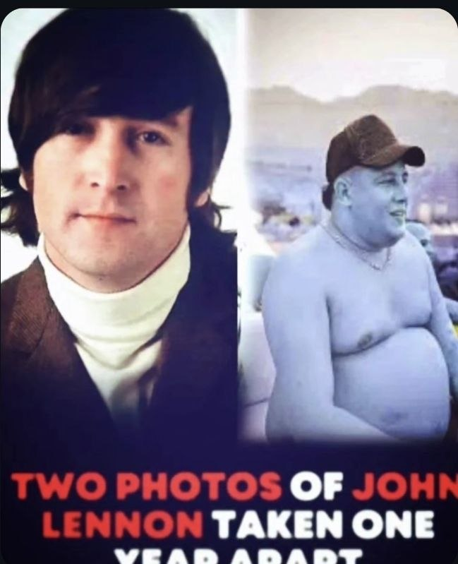
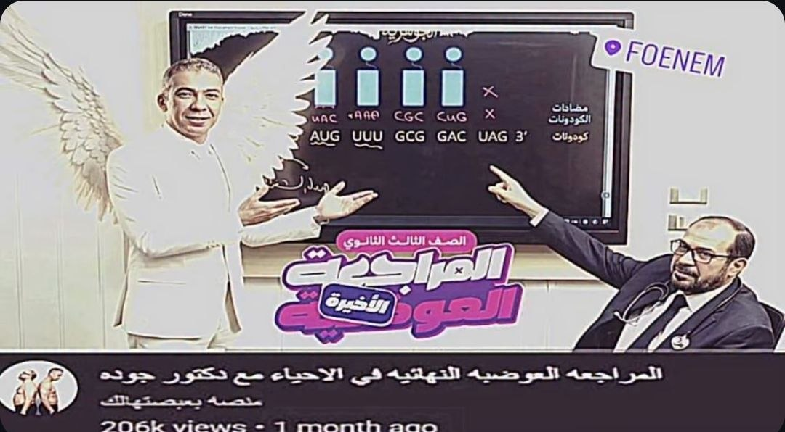
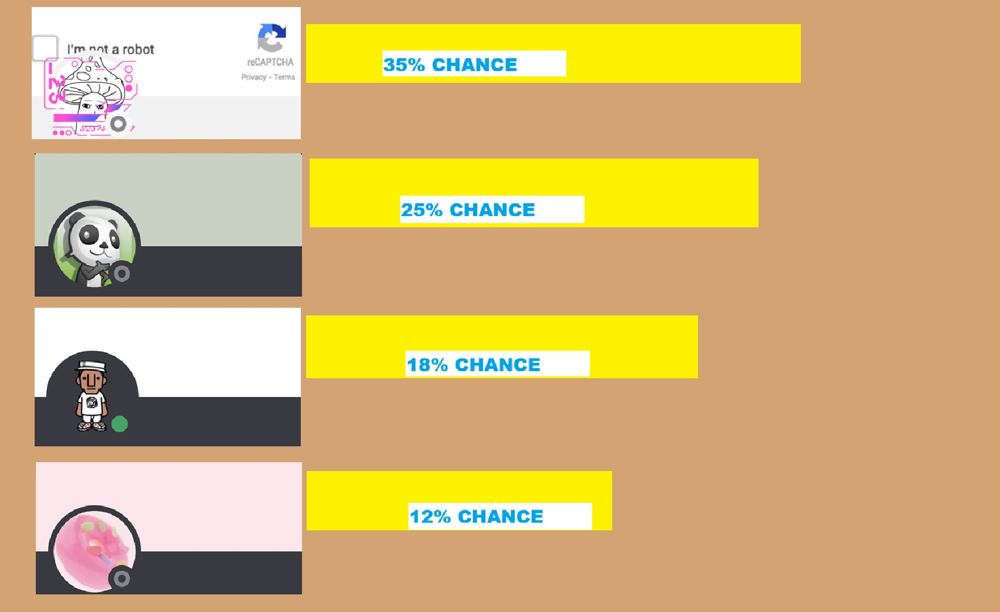

BIG PRAYERS AND LOVE.... TO MY PEOPLE WE FOUGHT A VALIANT BATTLE
MA9R.... THE ARABS.... THE AFRICANS.... THE MUSLSIMS.... WE PRESENTED OUR POWER...... LET IT BE KNOWN.....

IN LIGHT OF RECENT BUNDASLIGA NEWS.... OUR SPOKESMAN @b5erzz ... HAS RELEASED AN EXCLUSIVE... NEVER HEARD BEFORE... STATEMENT.... PLEASE LISTEN TO IT CAREFULLY...
AS YOU HAVE OFFICIALLY HEARD FROM OUR SPOKESMAN.... BUNDASLIGA IS NO- ITS NO- WAIT HOLD ON... I AM GETTING INFO THAT @b5erzz HAS DROPPED ANOTHER STATEMENT....
AS YOU HAVE HEARD FROM OUR SPOKESMAN BUNDASLIGA IS NOT OVAH..... WE MAY HAVE BEEN GONE FOR A QUARTER OF A YEAR.... BUT GREATNESS....
TAKES TIME....
IN THE PAST 4 MONTHS.... MANY HAVE CHANGED....
EMRAN GREW HIS OWN BBL OUT OF SHEER JEALOUSY OF THE FAMOUS INTERNATIONAL PLAYER @gedov WHO HAS SPECIALIZED IN THE WEEZO LEAGUE...

(A 100% Trace of Emran's Current BBL)
(emran has threatened legal action over any leaking of his BBL...)
MOVING ON... FAMOUS PLAYER @somedude HAS REPORTEDLY SCURRIED OFF THE BUNDASLIGA... HIS CONSTANT REFUSAL TO APPEAR IN ANY BUNDASLIGA GAME...
HAS RAISED MANY QUESTIONS ABOUT HIS FITNESS AND CAPABILITY OF STILL PERFORMING ON THE WORLD STAGE... WILL EMRAN LOOK FORWARD TO USING HIM AS A SUPER SUB OR IS IT SIMPLY TOO RISKY???

MULTIPLE REPORTS HAVE OFFICIALLY SHARED THAT VETERAN PLAYER @m.7addad HAS BEEN OFFICIALLY TRUSTED INTO THE EMRAN TEAM AFTER A HUGE BRAWL BETWEEN HIM AND EMRAN...
WHICH RESULTED IN INSANE AND HIGHLY AGGRESSIVE MAKE UP SEX THAT SAW THE BOTH OF THEM PUTTING ASIDE THEIR DIFFERENCES AND GETTING BACK ON THE FIELD...
"I honestly think 7mood would perform best in the front, he always had the explosiveness and mindset for a prime striker, back in the 2023 season he was absolutely killing it" - (quote by @donut__)

MOVING ONTO ALI'S SIDE OF THE EQUATION... THERE HAS BEEN A LOT OF TALK OF A COMPLETE OVERHAUL OF THEIR TRUSTED SYSTEM... BUT THEY HAVE NOT SHARED MUCH REGARDING THEIR PLAN...
WE DON'T QUITE KNOW WHAT BOTH ALI AND EMRAN PLAN ON DOING BUT ITS HIGHLY LIKELY GOING TO BE THE MOST WES5 FOOTBALL HUMANITY HAS EXPERIENCED...
BOTH PLAYERS KNOW THE VERY WEIGHT OF THE SEASON ENDING GAME... JUST ONE WIN COULD COMPLETELY SWITCH UP THE HAX BALOR EQUATION...

THESE ARE THE CURRENT HAXBALOR CHANCES AS IT STANDS
THE CHANCES WERE CALCULATED BY HIGHLY ADVANCED ARTIFICIAL INTELLIGENCE... (VIEW HERE)
ALL EMRAN NEEDS IS JUST A TIGHT WIN IN ORDER TO SECURE HIS FIRST EVER HAXBALOR HOWEVER.... WILL HE BE CAPABLE OF FACING OFF AGAINST THE FULLY REFORMED ALI(@donut__)???
"Honestly I have been just kinda jorking it out lately so I am not entirely sure whether bonnie blue is the current goat of the ga- oh this is a different interview" (quote by @unstoppablerage_ when asked who is the current goat of the game)
TO SUM IT UP... HAXBALL IS BACK... THE PLAYERS ARE BACK... @al7addad18 is BACK TO BEING BENCHED... EVERYTHING IS BACK TO BEING NORMAL...
TUNE IN SOON... HAXBALL.. NEEDS YOU... WILL YOU FIGHT... FOR YOUR TEAM... WILL YOU PUT YOUR LIFE FO YO TEAM.... LET IT BE KNOWN....